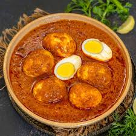

egg curry recipe

how to make egg curry
this is an endian dish
key steps involve frying spices (cumin, bay leaf),
sautéing onions and ginger-garlic, cooking down tomatoes with
powders (turmeric, chili, coriander), and simmering with water and eggs for 5-10 minutes
Ingredients
- boiled eggs (shelled and slit)
- 2 tbsp oil or ghee
- 1 large onion, finely chopped
- 1 tsp ginger-garlic paste
- 2-3 medium tomatoes, pureed or finely chopped
- <1 tsp cumin seeds/li>
- Spices: 1/2 tsp turmeric, 1 tsp Kashmiri chili powder,
1 tsp coriander powder, 1/2 tsp garam masala
- 1 cup water
- salt to taste
steps to making egg currry
-
put a bit of oil in a panand add
tumeric and chill(if you want them spicy)sear the eggs
until they turn golden brown
-
add abit oil in a different pan and add all the spices and
add an onion an saute until golden brown
- add ginger-garlic paste and saute for two minutes
add tomatoes ,tumeric,chillipowder,coiander powder and salt
cook until the mixtue thickens
-
add 2 cups of water and reduce
heat let it simmer for 10 minutes
- add the eggs and let it simmer for nother 6 minutes
- add in galam masala and garnish with coriander
- serve your dish with rice and enjoy
Home